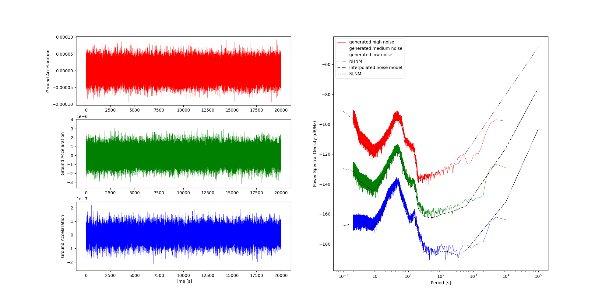

Noise
Realistic noise#
Given the spectral amplitude in observed seismic noise on Earth is not flat (i.e. white noise), it makes sense to calculate more realistic noise for things like resolution tests with synthetic data.
In this example, random noise seismograms are generated from three different noise models. These are Peterson's NLNM, NHNM, and an interpolated model that lies between the two.

View Source Code
peterson.py
#!/usr/bin/env python
# Example script for pysmo.tools.noise
import numpy as np
import matplotlib.pyplot as plt
from scipy import signal
from pysmo.tools.noise import generate_noise, peterson
from datetime import timedelta
npts = 200000
delta = timedelta(seconds=0.1)
sampling_frequency = 1 / delta.total_seconds()
nperseg = npts / 4
nfft = npts / 2
time_in_seconds = np.linspace(0, npts * delta.total_seconds(), npts)
def calc_power(data, sampling_frequency):
"""Calculuate power and drop first element (f=0Hz) to avoid dividing by 0"""
freqs, psd = signal.welch(
data, sampling_frequency, nperseg=nperseg, nfft=nfft, scaling="density"
)
return freqs[1:], psd[1:]
# Calculate noise models
low_noise_model = peterson(noise_level=0)
mid_noise_model = peterson(noise_level=0.5)
high_noise_model = peterson(noise_level=1)
# Generate random noise seismograms
low_noise_seismogram = generate_noise(npts=npts, model=low_noise_model, delta=delta)
mid_noise_seismogram = generate_noise(npts=npts, model=mid_noise_model, delta=delta)
high_noise_seismogram = generate_noise(npts=npts, model=high_noise_model, delta=delta)
# Calculuate power spectral density
f_low, Pxx_dens_low = calc_power(low_noise_seismogram.data, sampling_frequency)
f_mid, Pxx_dens_mid = calc_power(mid_noise_seismogram.data, sampling_frequency)
f_high, Pxx_dens_high = calc_power(high_noise_seismogram.data, sampling_frequency)
fig = plt.figure(figsize=(20, 10))
# Plot random high and low noise
plt.subplot(321)
plt.plot(time_in_seconds, high_noise_seismogram.data, "r", linewidth=0.2)
plt.ylabel("Ground Accelaration")
plt.subplot(323)
plt.plot(time_in_seconds, mid_noise_seismogram.data, "g", linewidth=0.2)
plt.ylabel("Ground Accelaration")
plt.subplot(325)
plt.plot(time_in_seconds, low_noise_seismogram.data, "b", linewidth=0.2)
plt.ylabel("Ground Accelaration")
plt.xlabel("Time [s]")
# Plot PSD of noise
plt.subplot(122)
plt.plot(
1 / f_high,
10 * np.log10(Pxx_dens_high),
"r",
linewidth=0.5,
label="generated high noise",
)
plt.plot(
1 / f_mid,
10 * np.log10(Pxx_dens_mid),
"g",
linewidth=0.5,
label="generated medium noise",
)
plt.plot(
1 / f_low,
10 * np.log10(Pxx_dens_low),
"b",
linewidth=0.5,
label="generated low noise",
)
plt.plot(
high_noise_model.T,
high_noise_model.psd,
"k",
linewidth=1,
linestyle="dotted",
label="NHNM",
)
plt.plot(
mid_noise_model.T,
mid_noise_model.psd,
"k",
linewidth=1,
linestyle="dashdot",
label="Interpolated noise model",
)
plt.plot(
low_noise_model.T,
low_noise_model.psd,
"k",
linewidth=1,
linestyle="dashed",
label="NLNM",
)
plt.gca().set_xscale("log")
plt.xlabel("Period [s]")
plt.ylabel("Power Spectral Density (dB/Hz)")
plt.legend()
plt.savefig("peterson.png")
plt.show()